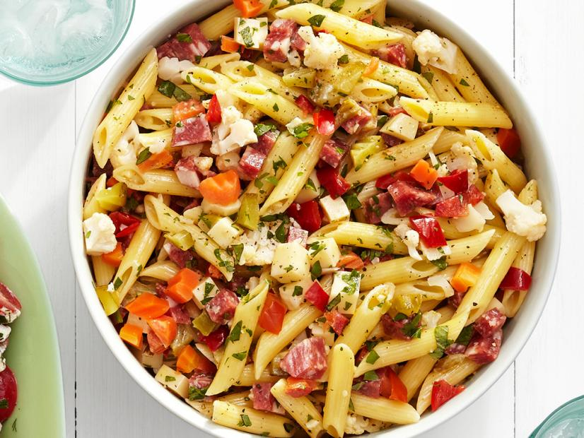

Italian Deli Pasta Salad

Why Italian Deli Pasta Salad?
This pasta salad has a trio of meats,
a mix of cheeses, and giardiniera. you can also use other meats like prosciutto,
hot calabrese, or mortadella.
Giardiniera comes in mild and hot varieties;
use whichever you prefer. A good-quality Italian dressing makes a difference too!
Ingredients
- 1 (16 ounce) package rotini or fusili pasta
- 2 cups cherry tomatoes, halved
- 8 ounces provolone cheese, cubed
- 4 ounces Genoa salami, chopped
- 4 ounces sliced pepperoni, cut into bite-sized pieces
- 4 ounces hot capacola sausage, roughly chopped
- 1 medium red onion, minced
- 1 (8 ounce) can black olives, drained
- ½ cup giardiniera
- ¼ cup grated Parmesan cheese
- 1 (16 ounce) bottle Italian salad dressing, or as needed
Steps
- Bring a large pot of lightly salted water to a boil;
cook rotini at a boil until tender yet firm to the bite,
8 to 10 minutes. Drain and rinse with cold water.
- Combine pasta, tomatoes, provolone cheese, salami,
pepperoni, capicola, onion, olives, giardiniera, Parmesan cheese,
and 1/2 of the Italian dressing in a large bowl.
Stir to combine and refrigerate for at least 1 hour
- Before serving, add some or all of the remaining dressing.